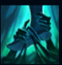

Senna
| Senna The Redeemer | |
|---|---|
| Release date | 10.11.2019 |
| Class | Marksman |
| Positions | Support |
| Resource | Mana |
| Range type | Ranged |
| Adaptive type | Physical |
| Base statistics | |||
| Health | 560 – 2022 | Resource | N/A |
| Health regen. | 7.5 –15.55 |
Mana regen. | 11.5-18.3 |
| Armor | 33 – 99.75 | Attack damage | 64 – 115 |
| Magic resist. | 32 – 53.25 | Crit. damage | 175% |
| Move. speed | 340 | Attack range | 125 |
Blestemată încă din copilărie să fie bântuită de Negura Întunecată, Senna s-a alăturat unui ordin sacru, cunoscut drept Santinelele Luminii, și i s-a împotrivit cu toată forța. Cu toate astea, a fost ucisă, iar sufletul i-a fost întemnițat într-un felinar de către nemilosul spectru numit Thresh. Pe când se afla în felinar, a refuzat să se lase pradă disperării și a învățat să folosească Negura; apoi, a primit o nouă viață, una ce a schimbat-o pentru totdeauna. Acum, poate controla atât puterea întunericului, cât și pe cea a luminii, iar cea mai mare dorință a ei e să distrugă Negura Întunecată o dată pentru totdeauna – cu fiecare proiectil lansat de arma ei străveche, îi întoarce puterea împotrivă și salvează sufletele captive înăuntrul ei. | CĂINȚĂ Când mor unități în apropierea Sennei, sufletele lor sunt prinse periodic în Negura Întunecată. Senna poate ataca aceste suflete pentru a le elibera, absorbind Negura care le-a cuprins după moarte. Negura alimentează puterea ''Tunului antic'', amplificând daunele din atac, raza de atac și șansele de lovitură critică. Atacurile ''Tunului antic'' al Sennei durează pentru a fi lansate, provoacă daune bonus și îi oferă pentru scurt timp Sennei un procent din viteza de mișcare a țintei. |
|||
|---|---|---|---|---|
RAZĂ DE ÎNTUNERIC Din cele două țevi ale ''Tunului antic'', Senna lansează un fascicul de lumină și întuneric printr-o țintă, vindecând aliații și provocându-le daune inamicilor | ||||
 |
ULTIMA ÎMBRĂȚIȘARE Senna lansează un val de Negură Întunecată. Dacă lovește un inamic, se prinde de el cu aviditate, țintuindu-l pe el și toate unitățile din apropiere după o scurtă pregătire |
|||
| BLESTEMUL NEGURII ÎNTUNECATE Senna absoarbe Negura stocată în armă, formând o furtună în jurul ei, îmbrățișând întunericul și devenind un spectru. Aliații care intră în zonă sunt camuflați și devin și ei spectre, pe măsură ce Negura îi învăluie. Spectrele primesc un bonus la viteza de mișcare, nu pot fi selectate și își ascund identitatea. |
||||
UMBRA ZORILOR Senna cheamă pietrele antice ale Santinelelor căzute, despărțindu-și ''Tunul antic'' într-o serie de umbre și lumini. Apoi lansează un fascicul global care protejează aliații și le provoacă daune inamicilor prinși în centru. |